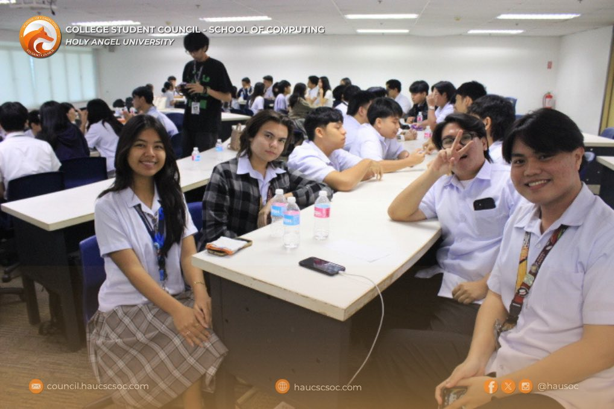

My technical abilities span web development, design tools, and productivity applications. I focus on writing clean, structured code, while also understanding the importance of responsive design and accessibility.
I am comfortable using both programming languages and supportive tools that make development and design more efficient. These skills give me the flexibility to work on both front-end development and basic IT tasks.
I have experience with Python, HTML5, CSS, and Java. I enjoy exploring new programming tools and experimenting with interactive web components to make websites more engaging and dynamic.
In addition, I use tools like Figma, Canva, VS Code, Google Workspace, and Excel. I also practice version control with Git and GitHub, while applying responsive design and accessibility principles in projects.
Soft Skills

Soft skills are the foundation of how I work with others and manage responsibilities. These skills allow me to collaborate within teams, manage time effectively, and communicate ideas clearly.
Team Collaboration
Time Management
Visual Communication
Written Communication
I also value reflective thinking, which allows me to learn from past experiences and continuously improve. Adaptability is another strength, helping me adjust quickly to new tools, roles, or challenges.
Together, these skills help me deliver results while fostering collaboration and innovation within a group environment.
By combining interpersonal skills with technical knowledge, I maintain a balanced approach to both teamwork and individual tasks.
Certifications
CompTIA IT Fundamentals+ (ITF+) Certification
Issued: March 28, 2025
Verified knowledge of IT concepts, infrastructure, and networking basics
Understanding of troubleshooting and database fundamentals
Introduced to security, programming, and software development practices
Foundation for pursuing higher-level IT certifications
Introduction to Web Development - freeCodeCamp (On-going)
This course introduces the core of front-end web development. It covers the basics of HTML and CSS for structure and styling, and responsive design for accessibility across devices. Learners complete hands-on projects such as landing pages, portfolios, and interactive forms to apply their skills. The course also emphasizes best practices in semantic HTML, clean code, and accessibility, preparing participants for more advanced topics in web development.